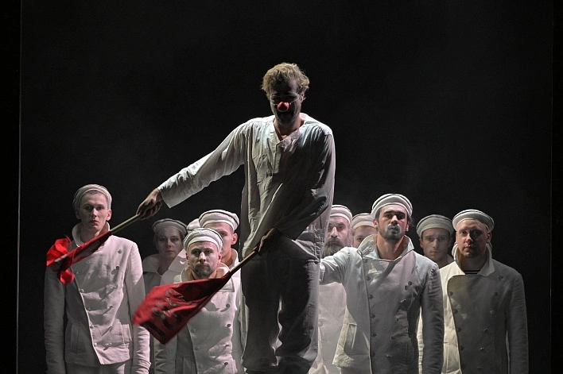
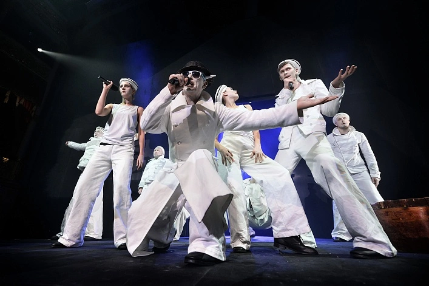
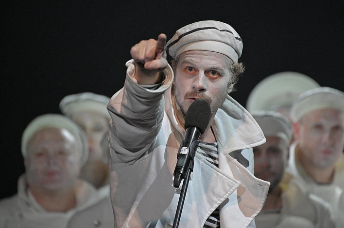
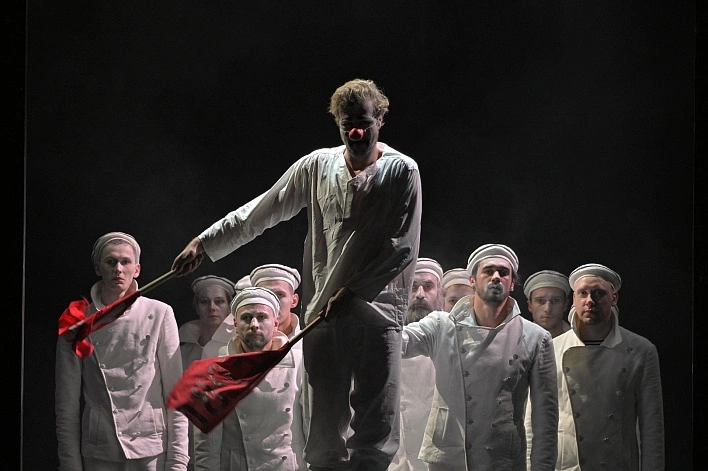
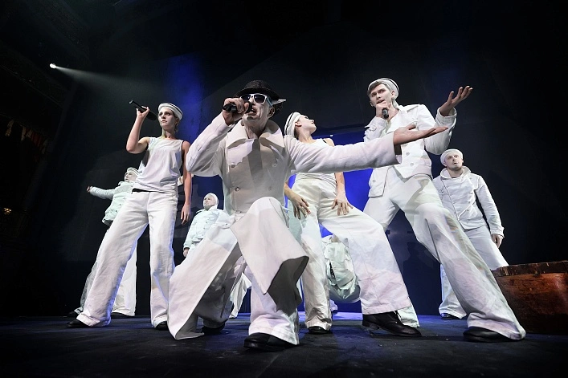
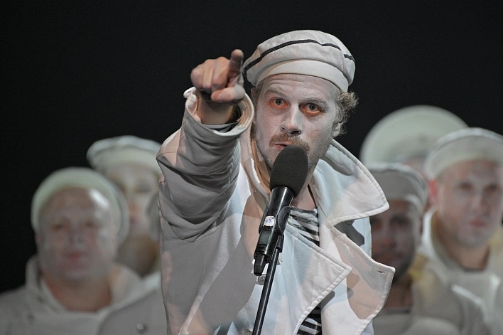

Оптимистическая трагедия
Прощальный бал
Драма о любви и революции. Последний бал на корабле.
Автор: Всеволод Вишневский
Режиссёр: Иван Петров
Премьера: 12 марта 2025
Продолжительность: 2 часа 30 минут (с антрактом)
Жанр: Драма, историческая трагедия
О спектакле
Эпическая постановка о любви, революции и человеческой судьбе. Последний бал на крейсере «Аврора» — символ прощания с эпохой. Мощная игра актёров, живая музыка, световые эффекты. Спектакль, который не оставляет равнодушным.
В ролях
- Комиссар — Анна Смирнова
- Вожак — Дмитрий Орлов
- Сибирцев — Алексей Козлов
- Матросы, солдаты, революционеры — Труппа театра
Купить билет
Ближайшие даты: 15, 22, 29 ноября 2025
Где нас найти
Санкт-Петербург, площадь Островского, 6